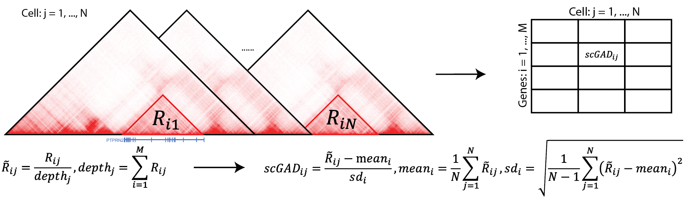
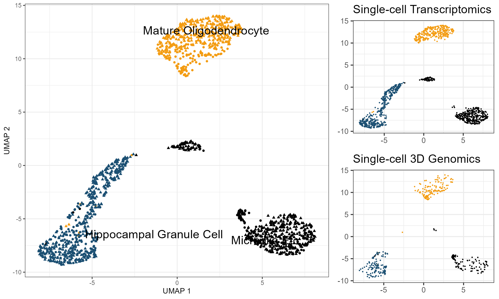

scGAD-tutorial
scGAD_tutorial.RmdIntroduction
Recent advancements in single-cell technologies enabled the profiling of 3D genome structures in a single-cell fashion. Quantitative tools are needed to fully leverage the unprecedented resolution of single-cell high-throughput chromatin conformation (scHi-C) data and integrate it with other single-cell data modalities. We present single-cell gene associating domain (scGAD) scores as a dimension reduction and exploratory analysis tool for scHi-C data. scGAD enables summarization at the gene level while accounting for inherent gene-level genomic biases. Low-dimensional projections with scGAD capture clustering of cells based on their 3D structures. scGAD enables identifying genes with significant chromatin interactions within and between cell types. We further show that scGAD facilitates the integration of scHi-C data with other single-cell data modalities by enabling its projection onto reference low-dimensional embeddings such as scRNA-seq. Please refer to our manuscript, scGAD: single-cell gene associating domain scores for exploratory analysis of scHi-C data, on BioRxiv for the comprehensive study of scGAD.

In this tutorial, we will walk you through:
- The usage of scGAD function to project single-cell Hi-C contact matrices into gene x cell scGAD score matrix.
- Integration of cells from the scHi-C data with scRNA-seq reference panel through the projection of scGAD score matrix onto lower-dimensional embeddings of scRNA-seq.
Installation
Please refer to the BandNorm R package installation section in BandNorm tutorial. scGAD is one of the key functions of BandNorm R package.
1. scGAD Usage
1.1 Format of input scHi-C data
scGAD function allows two types of formats for the input data. It can be A. the path to the scHi-c contact matrices files or B. a data.frame R object containing all the interactions from all the cells with cell name appended in each row.
A. A path to the folder where the single-cell Hi-C contact matrices are saved. Under such directory, each file should be in the form of 5-columns bed file format, namely chrA, binA, chrB, binB, count, showing the interactions for corresponding individual cell:
chr1 0 chr1 10000 9
chr1 10000 chr1 10000 20
chr1 0 chr1 20000 2
chr1 10000 chr1 20000 4
chr1 20000 chr1 20000 22
chr1 10000 chr1 30000 1
chr1 20000 chr1 30000 11
chr1 30000 chr1 30000 197
chr1 10000 chr1 40000 1
chr1 20000 chr1 40000 2B. Another way is to provide a data.frame object, which includes all the interactions information plus the cell name where such interactions occur. The data frame should have 5 columns and take the exact column name as chrom, binA, binB, count, cell. The column names in here should be exactly the same as stated, and the order of columns doesn’t matter. Option B is not recommended for the large volume of single-cell Hi-C data sets, especially when it is implemented with limited computational resources like a laptop. However, it can be fast if it is run on servers or computers where sufficient memory is available to store such large data.frame object.
> head(scgad_df, 10)
chrom binA binB count cell
chr1 0 10000 9 cell_1
chr1 10000 10000 20 cell_1
chr1 0 20000 2 cell_1
chr1 10000 20000 4 cell_1
chr1 20000 20000 22 cell_1
chr1 10000 30000 1 cell_2
chr1 20000 30000 11 cell_2
chr1 30000 30000 197 cell_2
chr1 10000 40000 1 cell_2
chr1 20000 40000 2 cell_31.2 Format of input gene coordinates.
A four columns data.table or data.frame object is needed to show the gene starting and ending coordinates. We have wrapped up 4 commonly used gene annotation files in the BandNorm package, mm9, mm10, hg19 and hg38, which can be directly used by calling mm9Annotations, mm10Annotations, hg19Annotations, and hg38Annotations. Below are the first 5 rows of mm9Annotations. The first column is chromosome, s1 and s2 are the starting and ending coordinates of the gene with the strand in the fourth column and gene name in the last column. scGAD function will automatically extend 1kb upstream of 5’ end of each gene to include the promoter region. Users can create their own gene coordinate input variable based on the gene annotation files from GENCODE.
`> head(mm9Annotations, 5) chr s1 s2 strand gene_name chr1 3195982 3661579 - Xkr4 chr1 4334224 4350473 - Rp1 chr1 4481009 4486494 - Sox17 chr1 4763287 4775820 - Mrpl15 chr1 4797869 4876851 + Lypla1
1.3 Demo run of scGAD
The demo data used for illustrations were generated based on the real scHi-C data from Tan et al. 2021. Cell. 350 cells were randomly sampled from three major cell types, namely Mature Oligodendrocyte, Microglia Etc. and Hippocampal Granule Cell. The aim of the demo data is to show the format of the input object to scGAD function and how to run scGAD function to get the scGAD scores.
library(BandNorm)
#> Loading required package: ggplot2
#> Warning: package 'ggplot2' was built under R version 4.0.5
#> Loading required package: dplyr
#> Warning: package 'dplyr' was built under R version 4.0.5
#>
#> Attaching package: 'dplyr'
#> The following objects are masked from 'package:stats':
#>
#> filter, lag
#> The following objects are masked from 'package:base':
#>
#> intersect, setdiff, setequal, union
#> Loading required package: data.table
#> Warning: package 'data.table' was built under R version 4.0.4
#>
#> Attaching package: 'data.table'
#> The following objects are masked from 'package:dplyr':
#>
#> between, first, last
#> Loading required package: Rtsne
#> Warning: package 'Rtsne' was built under R version 4.0.3
#> Loading required package: umap
#> Warning: package 'umap' was built under R version 4.0.3
#> Loading required package: progress
#> Warning: package 'progress' was built under R version 4.0.4
#> Loading required package: harmony
#> Loading required package: Rcpp
#> Warning: package 'Rcpp' was built under R version 4.0.5
#> Loading required package: Matrix
#> Warning: package 'Matrix' was built under R version 4.0.5
#> Loading required package: gmodels
#> Warning: package 'gmodels' was built under R version 4.0.4
#> Loading required package: doParallel
#> Warning: package 'doParallel' was built under R version 4.0.3
#> Loading required package: foreach
#> Warning: package 'foreach' was built under R version 4.0.3
#> Loading required package: iterators
#> Warning: package 'iterators' was built under R version 4.0.3
#> Loading required package: parallel
#> Loading required package: matrixStats
#> Warning: package 'matrixStats' was built under R version 4.0.3
#>
#> Attaching package: 'matrixStats'
#> The following object is masked from 'package:dplyr':
#>
#> count
#> Loading required package: Seurat
#> Warning: package 'Seurat' was built under R version 4.0.5
#> Attaching SeuratObject
#> Loading required package: strawr
#> Warning: package 'strawr' was built under R version 4.0.5
#> Loading required package: rmarkdown
#> Warning: package 'rmarkdown' was built under R version 4.0.5
library(curl)
#> Warning: package 'curl' was built under R version 4.0.5
#> Using libcurl 7.64.1 with Schannel
h = new_handle(dirlistonly=TRUE)
con = curl("http://ftp.cs.wisc.edu/pub/users/kelesgroup/siqi/scGAD/scGADExample.rda", "r", h)
load(con)
close(con)
gad_score = scGAD(hic_df = scgad_df, genes = geneANNO, depthNorm = TRUE)A successful scGAD run will give you the scGAD scores like the following. gad_score for the demo data run is a 2395 x 350 matrix.
> head(gad_score)
cell_1 cell_2 cell_3 ... ...
Xkr4 -2.29 -0.87 -0.29 ... ...
Rp1 0.42 0.09 -1.93 ... ...
Rgs20 -0.14 -1.25 0.16 ... ...1.4 Parallel running
scGAD function can be accelerated considerably through the parallel running mode using parameters cores and threads. More specifically, cores means the number of CPUs used for parallel processing of cells with each CPU handling one individual cell’s related (1) data reading, (2) score calculation. For instance, cores = 4 means that scGAD scores are processed for four cells simultaneously. Additionally, threads indicates the number of parallel running for data reading procedure per core (i.e., per cell). In other words, we can deploy multiple threads for each cell to handle the data reading step, which otherwise tends to take a long time. The general recommendation is: a. keep the cores x threads value to be smaller than the total number of CPUs available. b. assign a larger value to threads than cores for better performance. For example, suppose there are 50 CPUs available:
gad_score = scGAD(hic_df = scgad_df, genes = geneANNO, depthNorm = TRUE, cores = 4, threads = 12)1.5 Visualizion of the lower-dimensional representations of scGAD scores
Cell types separation can be visualized using PCA or t-SNE or UMAP. Showing below is the PCA dimension reduction of scGAD scores, and the first two principal components can nicely separate the three major cell types.
library(ggplot2)
summary = summary[match(colnames(gad_score), summary$cell), ]
gadPCA = prcomp(gad_score)$rotation[, 1:15]
gadPCA = data.frame(gadPCA, cellTypes = summary$`cell-type cluster`)
ggplot(gadPCA, aes(x = PC1, y = PC2, col = cellTypes)) +
geom_point() +
theme_bw(base_size = 18) +
scale_color_manual(
breaks = c("Hippocampal Granule Cell", "Mature Oligodendrocyte", "Microglia Etc."),
values = c("#1B4F72", "#F39C12", "#000000")
)
2. Projection of scGAD on scRNA-seq
In this section, we will show how to project cells from scHi-C data onto the reference panel constructed by the low-dimensional embeddings of scRNA-seq. We also generated scRNA-seq demo data based on the MALBAC-DT from Tan et al. 2021. Cell which has the same cell system as the scHi-C data. We sampled 1076 cells from Mature Oligodendrocyte, Microglia Etc. and Hippocampal Granule Cell, three cell types as same as the scHi-C demo data.
library(ggplot2)
library(viridis)
#> Warning: package 'viridis' was built under R version 4.0.5
#> Loading required package: viridisLite
#> Warning: package 'viridisLite' was built under R version 4.0.5
library(dplyr)
library(gridExtra)
#>
#> Attaching package: 'gridExtra'
#> The following object is masked from 'package:dplyr':
#>
#> combine
library(ggpubr)
#> Warning: package 'ggpubr' was built under R version 4.0.3
library(Seurat)
DataList = list(scGAD = gad_score, scRNAseq = RNA)
cellTypeList = list(scGAD = summary$`cell-type cluster`, scRNAseq = cellTypeRNA)
names(cellTypeList[[1]]) = summary$cell
names(cellTypeList[[2]]) = colnames(RNA)
combinedAssay = runProjection(DataList, doNorm = c(FALSE, FALSE), cellTypeList)
#> Warning: The following arguments are not used: row.names
#> Warning: The following arguments are not used: row.names
#> Scaling features for provided objects
#> Finding all pairwise anchors
#> Running CCA
#> Merging objects
#> Finding neighborhoods
#> Finding anchors
#> Found 1720 anchors
#> Filtering anchors
#> Retained 523 anchors
#> Merging dataset 1 into 2
#> Extracting anchors for merged samples
#> Finding integration vectors
#> Finding integration vector weights
#> Integrating data
#> Warning: The default method for RunUMAP has changed from calling Python UMAP via reticulate to the R-native UWOT using the cosine metric
#> To use Python UMAP via reticulate, set umap.method to 'umap-learn' and metric to 'correlation'
#> This message will be shown once per session
#> 20:30:15 UMAP embedding parameters a = 0.9922 b = 1.112
#> 20:30:15 Read 1426 rows and found 5 numeric columns
#> 20:30:15 Using Annoy for neighbor search, n_neighbors = 30
#> 20:30:15 Building Annoy index with metric = cosine, n_trees = 50
#> 0% 10 20 30 40 50 60 70 80 90 100%
#> [----|----|----|----|----|----|----|----|----|----|
#> **************************************************|
#> 20:30:16 Writing NN index file to temp file C:\Users\solei\AppData\Local\Temp\RtmpOIqCzl\file19b46b6f49a8
#> 20:30:16 Searching Annoy index using 1 thread, search_k = 3000
#> 20:30:16 Annoy recall = 100%
#> 20:30:16 Commencing smooth kNN distance calibration using 1 thread
#> 20:30:17 Initializing from normalized Laplacian + noise
#> 20:30:17 Commencing optimization for 500 epochs, with 55332 positive edges
#> 20:30:20 Optimization finished
p_celltype = DimPlot(combinedAssay, reduction = "umap", label = TRUE, repel = TRUE,
pt.size = 1.3, shape.by = "method", label.size = 6) +
xlab("UMAP 1") +
ylab("UMAP 2") +
scale_color_manual(
breaks = c("Hippocampal Granule Cell", "Mature Oligodendrocyte", "Microglia Etc."),
values = c("#1B4F72", "#F39C12", "#000000")
) +
rremove("legend")
pRNA = combinedAssay@reductions$umap@cell.embeddings %>%
data.frame %>%
mutate(celltype = c(cellTypeList[[1]], cellTypeList[[2]]), label = c(rep("scGAD", length(cellTypeList[[1]])), rep("scRNA-seq", length(cellTypeList[[2]])))) %>%
filter(label == "scRNA-seq") %>%
ggplot(aes(x = UMAP_1, y = UMAP_2, color = celltype)) +
geom_point(size = 0.3) +
theme_pubr(base_size = 14) +
scale_color_manual(
breaks = c("Hippocampal Granule Cell", "Mature Oligodendrocyte", "Microglia Etc."),
values = c("#1B4F72", "#F39C12", "#000000")
) +
xlab("UMAP 1") +
ylab("UMAP 2") +
rremove("legend") +
ggtitle("Single-cell Transcriptomics") +
theme(axis.title = element_blank())
pGAD = combinedAssay@reductions$umap@cell.embeddings %>%
data.frame %>%
mutate(celltype = c(cellTypeList[[1]], cellTypeList[[2]]), label = c(rep("scGAD", length(cellTypeList[[1]])), rep("scRNA-seq", length(cellTypeList[[2]])))) %>%
filter(label == "scGAD") %>%
ggplot(aes(x = UMAP_1, y = UMAP_2, color = celltype)) +
geom_point(size = 0.3) +
theme_pubr(base_size = 14) +
scale_color_manual(
breaks = c("Hippocampal Granule Cell", "Mature Oligodendrocyte", "Microglia Etc."),
values = c("#1B4F72", "#F39C12", "#000000")
) +
xlab("UMAP 1") +
ylab("UMAP 2") +
rremove("legend") +
ggtitle("Single-cell 3D Genomics") +
theme(axis.title = element_blank())
lay = rbind(c(1, 1, 2))
grid.arrange(p_celltype, arrangeGrob(pRNA, pGAD, ncol = 1, nrow = 2), layout_matrix = lay)